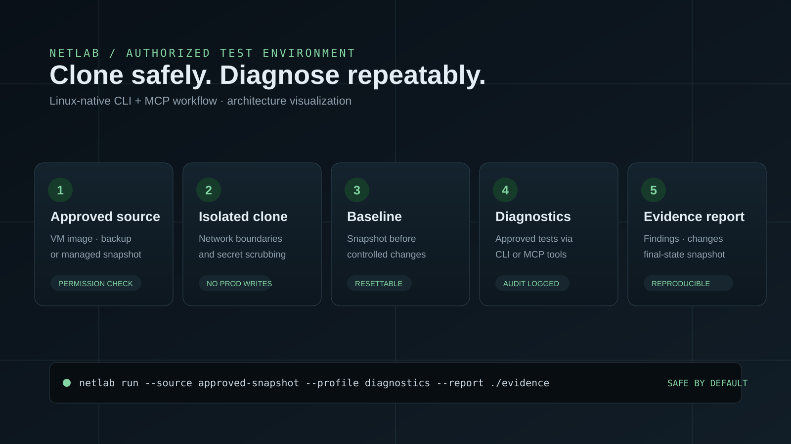

Server Cloning & Test Labs
Lab tooling and environments for cloning servers and carrying out controlled testing, debugging and troubleshooting.

khaled@systems:~/projects$ cat project-brief.md
Project notes are a concise public overview. Detailed implementation material can be shared selectively.
Testing changes against production-like systems can be risky or difficult to reproduce.
A set of labs and software for server cloning, testing and debugging.
Environment replication, repeatable tests, safe debugging and infrastructure experimentation.
The diagram records the planned safety boundary: approved source, isolated clone, baseline snapshot, controlled diagnostics and an evidence report. It is an architecture visualization, not proof of a live production clone.
Want to discuss the engineering?
I can share additional technical detail and a demonstration privately.
Request a discussion ↗